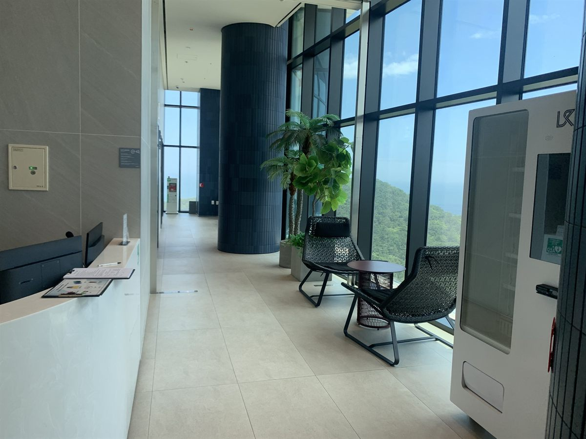

노원구 무인자판기 설치
호텔 로비 라운지 냉장 음료·스낵 자판기

숙박시설은 앞서 다룬 사무실 건물과 시간표가 정반대입니다. 낮에는 로비가 비어 있다가 체크인이 시작되는 저녁부터 사람이 돌기 시작하고, 늦은 밤과 새벽에 한 번 더 움직입니다. 이번 노원구 현장에서 저희가 먼저 물어본 것도 객실 수가 아니라, 프런트에 사람이 상주하지 않는 시간이 언제부터 언제까지인가였습니다.
그 시간대가 곧 자판기가 프런트를 대신해 주는 구간이기 때문입니다. 처음에는 프런트 데스크 바로 옆이 후보였습니다. 눈에는 가장 잘 띄지만, 직원과 마주 보는 자리에서는 손님이 오래 고르지 못합니다. 결국 라운지 쪽 통로 끝, 창가 좌석에서 바로 보이면서도 시선이 부담스럽지 않은 자리로 옮겼습니다. 짐을 내려놓고 잠깐 앉은 손님이 고개만 돌리면 보이는 지점입니다.
노원구 호텔 로비에 넣은 구성
투숙객이 밤에 찾는 물건은 폭이 좁고 분명합니다. 생수와 이온음료가 절반 이상을 차지하고, 다음이 캔맥주 대용으로 찾는 탄산과 숙취 관련 음료입니다. 그래서 냉장 칸을 넉넉히 잡고 상온 간식은 줄였습니다. 간식은 컵라면처럼 객실에서 물만 부으면 되는 품목과, 개별 포장 과자 정도로 정리했습니다. 칫솔·면도기 같은 세면용품을 한두 칸 넣어 두면 프런트 문의가 눈에 띄게 줄어듭니다.
결제는 카드와 간편결제로 열어 두었습니다. 외국인 투숙객이 있는 건물이라면 해외 카드 승인 여부를 미리 확인하시는 편이 좋습니다. 재고와 내부 온도는 휴대폰에서 바로 보이고, 새벽에 특정 칸이 비어도 다음 날 아침에 알림으로 확인됩니다. 야간 근무자가 자판기를 신경 쓸 일이 없다는 점이 이 자리의 핵심입니다.
- 음료 — 냉장 위주. 생수·이온음료를 가장 손 닿기 쉬운 칸에
- 간식 — 컵라면·개별 포장 과자. 부피 큰 상온 품목은 축소
- 부가 — 칫솔·면도기 등 세면용품 한두 칸(프런트 문의 감소)
- 관리 — 카드·간편결제, 재고·온도 원격 확인, 야간 무인 운영
해 보니 좋았던 점, 그리고 감안할 점
장점은 가격 저항이 적다는 것입니다. 늦은 시간에 밖으로 나가는 수고와 비교되기 때문에, 편의점과 백 원 단위로 견주는 손님이 드뭅니다. 야간에 프런트가 비는 건물이라면 손님 불편이 줄어드는 효과도 같이 따라옵니다. 실내 설치라 비바람을 맞지 않고 전원도 대개 가까이 있어, 시공 자체는 하루면 끝납니다.
반대로 미리 아셔야 할 점이 네 가지 있습니다. 첫째, 매출이 객실 가동률을 그대로 따라갑니다. 비수기와 평일에는 눈에 띄게 줄어드는 것이 정상이니 한 달 단위로 보셔야 합니다. 둘째, 로비는 조용한 공간이라 냉각기 소리가 도드라질 수 있습니다. 프런트 데스크나 객실 출입문 바로 옆은 피하는 편이 낫습니다. 셋째, 로비 인테리어와 색이 부딪히면 눈에 거슬립니다. 기종 외장을 고를 때 이 부분을 같이 보셔야 합니다. 넷째, 객실층에 나눠 두는 배치는 권하지 않습니다. 층마다 한 대씩 두면 각 대의 회전이 떨어지고 보충 동선만 길어집니다. 로비에 한 대를 제대로 두는 편이 결과가 낫습니다.
노원구, 이런 자리가 잘 맞습니다
노원구는 서울 동북권 끝에 있고 수락산과 불암산이 바로 접해 있는 지역입니다. 상계동은 대규모 아파트 단지와 노원역 일대 상권이 함께 있어 유동 인구가 가장 많고, 중계동은 은행사거리를 중심으로 학원가가 형성되어 있습니다. 공릉동에는 서울과학기술대학교와 태릉·화랑대가 있고 경춘선숲길이 지나며, 월계동은 광운대학교와 광운대역을 끼고 있습니다. 하계동은 주거지 성격이 뚜렷합니다.
숙박시설 외에도 저희가 권하는 자리는 기다림이 생기는 공간입니다. 등산객이 모이는 산 초입 상가, 대학가 원룸 건물 공동 현관, 학원가 건물의 대기 공간 같은 곳이 그렇습니다. 반대로 출입문 바로 안쪽처럼 지나치기만 하는 자리는 통행량에 비해 결과가 나오지 않습니다.
노원구 서비스 지역
상계동 · 중계동 · 하계동 · 공릉동 · 월계동
노원구 전역에서 방문 상담이 가능합니다. 인접한 도봉구·강북구·성북구와 경기 남양주시·의정부시도 같은 담당자가 함께 다닙니다. 지역별 안내는 노원구 무인자판기 설치 안내 페이지에서 보실 수 있습니다.
노원구 무인자판기, 이렇게 시작하시면 됩니다
전화나 상담 신청으로 건물 주소만 남겨 주시면 됩니다. 담당자가 나가서 로비 동선, 콘센트까지의 거리, 라운지 가구 배치, 그리고 짐을 끄는 손님이 지나는 폭을 확인합니다. 그 자리에 맞는 기종과 품목을 정하고 설치일을 잡으면 끝이며, 설치비는 받지 않습니다. 기계는 구입·렌탈·임대 중에서 고르실 수 있어 초기 비용 없이 시작하셔도 됩니다.
객실 수가 적거나 프런트가 24시간 상주해 자판기 효과가 크지 않을 것 같으면 그 자리에서 솔직히 말씀드립니다. 숙박시설은 한 번 자리를 잡으면 오래 가는 대신 옮기기가 번거로운 공간이라, 처음에 위치를 제대로 고르는 일이 무엇보다 중요합니다.
※ 사진은 픽프리가 시공한 설치 사례이며, 글에 적힌 지역의 현장 사진은 아닙니다.
함께 많이 찾는 키워드
노원구 무인자판기 · 노원구 자판기 설치 · 노원구 자판기 임대 · 노원구 자판기 렌탈 · 서울 무인자판기 · 서울 자판기 설치 · 상계동 자판기 · 중계동 자판기 · 하계동 자판기 · 공릉동 자판기 · 월계동 자판기 · 노원역 자판기 · 호텔 자판기 · 숙박시설 자판기 · 모텔 자판기 · 로비 자판기 · 라운지 자판기 · 냉장 자판기 · 생수 자판기 · 음료 자판기 · 스낵 자판기 · 무인키오스크 설치 · 스마트 자판기 · 카드 자판기 · 자판기 설치비용 · 자판기 원격관리